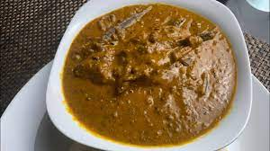

Beans Torborgee
My beloved country of Liberia is located on the West Coast of Africa and
is known to have some of the best dishes on the continent and Torborgee
is one of them. There are approximately 10 types of Torborgee soups that is cook in Liberia.
Here is the recipes for Beans Torborgee.This types of
torborgee that is popular among all the ethnic groups of Liberia.
Beans torborgee is a spicy Liberian stew made with beans and a special oil
called the Torborgee Palm Oil and a soda called Coutry Soda.
It is orginally associated with the Lorma people inhabiting the area of
Lofa County in Liberia.
Ingredients
Beans
Pepper
Dry Fish
Fresh Fish
Dry Meat
Fresh Meat
Onions
Seasons of Choice
*Country Soda
Baking Soda
Torborgee Palm Oil
*Can be avoided if it is not available in your region
Steps
The steps to fellow when preparing this soup is quite simple
Watch the beans toughly and place it in a pot
Add the fishes and meats
Blend the pepper and onions and place it the pot
You can now add a seasoning of your choice
Allow to cook until the beans and meat are well cooked
If the is still enough water, you can filter the water out
If you are using a blender, let the beans cold a bit then blend 75%
or all of the beans
Else, you can place a desire quantity of the beans in a bowl and
grind it manually.
Pull the beans back into the pot and add as much oil as possible
You may choose to heat it on up or leave it as it is.
Finally, you can add the baking soda and the country soda. Be mindful of
the quantity of sodas you add as too much of the soda may lead to
frequent used of the toilet in hours that follow.
Now you can serve with rice, bulgar wheat, or cuscus.
Thanks for checking out our recipe, hope your enjoy it.